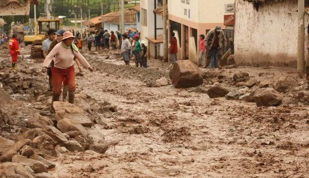

Es un fenómeno geológico de drenaje natural, de lluvias cortas y torrenciales, que producen una erosión, transporte y depósitos rápidos y violentos de materiales detríticos inconsolidados, en una cuenca pequeña y con pendiente pronunciada.